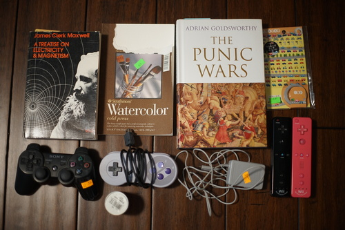

I love bunny....

I ordered a Fotodiox adapter for my Konica AR 57mm f/1.4 lens and it arrived today~ Did I mention I asked for a コニカ body cap set at the camera store and found out Americans do not say コニカ? 恥ずかし....


I spent a bit of time cleaning the absolute gunk from the ridges of the rings. It was a pain in the butt! But I took it for a test run with Grassy Knoll before switching back to the telezoom for evening bunshots.
I'll have to compare it with my Canon FD 50mm f/1.4 after I get some use out of it. So far, it's 127 grams heavier. O_o;;
I spotted some video game items at the non-Goodwill thrift store! Wahoo!!
It plugs into the wiimote. Is that useful??
Now really, do you think I could pass up a PINK Wiimote?? It will go perfectly next to my Yoshi wiimote.